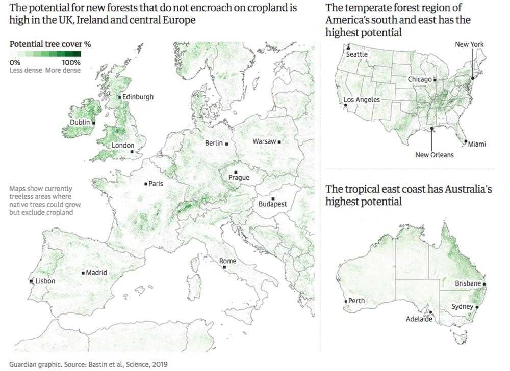

Redwood trees in Guerneville, California. Photograph: Gabrielle Lurie/The Guardian
Redwood trees in Guerneville, California. Photograph: Gabrielle Lurie/The Guardian
Research shows a trillion trees could be planted to capture huge amount of carbon dioxide
Damian Carrington Environment editor
Thu 4 Jul 2019 19.00 BST Last modified on Fri 5 Jul 2019 00.50 BST
Planting billions of trees across the world is by far the biggest and cheapest way to tackle the climate crisis, according to scientists, who have made the first calculation of how many more trees could be planted without encroaching on crop land or urban areas.
As trees grow, they absorb and store the carbon dioxide emissions that are driving global heating. New research estimates that a worldwide planting programme could remove two-thirds of all the emissions that have been pumped into the atmosphere by human activities, a figure the scientists describe as “mind-blowing”.
The analysis found there are 1.7bn hectares of treeless land on which 1.2tn native tree saplings would naturally grow. That area is about 11% of all land and equivalent to the size of the US and China combined. Tropical areas could have 100% tree cover, while others would be more sparsely covered, meaning that on average about half the area would be under tree canopy.
The scientists specifically excluded all fields used to grow crops and urban areas from their analysis. But they did include grazing land, on which the researchers say a few trees can also benefit sheep and cattle.
“This new quantitative evaluation shows [forest] restoration isn’t just one of our climate change solutions, it is overwhelmingly the top one,” said Prof Tom Crowther at the Swiss university ETH Zürich, who led the research. “What blows my mind is the scale. I thought restoration would be in the top 10, but it is overwhelmingly more powerful than all of the other climate change solutions proposed.”
Crowther emphasised that it remains vital to reverse the current trends of rising greenhouse gas emissions from fossil fuel burning and forest destruction, and bring them down to zero. He said this is needed to stop the climate crisis becoming even worse and because the forest restoration envisaged would take 50-100 years to have its full effect of removing 200bn tonnes of carbon.

But tree planting is “a climate change solution that doesn’t require President Trump to immediately start believing in climate change, or scientists to come up with technological solutions to draw carbon dioxide out of the atmosphere”, Crowther said. “It is available now, it is the cheapest one possible and every one of us can get involved.” Individuals could make a tangible impact by growing trees themselves, donating to forest restoration organisations and avoiding irresponsible companies, he added.
Other scientists agree that carbon will need to be removed from the atmosphere to avoid catastrophic climate impacts and have warned that technological solutions will not work on the vast scale needed.
Jean-François Bastin, also at ETH Zürich, said action was urgently required: “Governments must now factor [tree restoration] into their national strategies.”
Christiana Figueres, former UN climate chief and founder of the Global Optimism group, said: “Finally we have an authoritative assessment of how much land we can and should cover with trees without impinging on food production or living areas. This is hugely important blueprint for governments and private sector.”
René Castro, assistant-director general at the UN Food and Agriculture Organisation, said: “We now have definitive evidence of the potential land area for re-growing forests, where they could exist and how much carbon they could store.”
The study, published in the journal Science, determines the potential for tree planting but does not address how a global tree planting programme would be paid for and delivered.
Crowther said: “The most effective projects are doing restoration for 30 US cents a tree. That means we could restore the 1tn trees for $300bn [£240bn], though obviously that means immense efficiency and effectiveness. But it is by far the cheapest solution that has ever been proposed.” He said financial incentives to land owners for tree planting are the only way he sees it happening, but he thinks $300bn would be within reach of a coalition of billionaire philanthropists and the public.
Effective tree-planting could take place across the world, Crowther said: “The potential is literally everywhere – the entire globe. In terms of carbon capture, you get by far your biggest bang for your buck in the tropics [where canopy cover is 100%] but every one of us can get involved.” The world’s six biggest nations, Russia, Canada, China, the US, Brazil and Australia, contain half the potential restoration sites.
Tree planting initiatives already exist, including the Bonn Challenge, backed by 48 nations, aimed at restoring 350m hectares of forest by 2030. But the study shows that many of these countries have committed to restore less than half the area that could support new forests. “This is a new opportunity for those countries to get it right,” said Crowther. “Personally, Brazil would be my dream hotspot to get it right – that would be spectacular.”
The research is based on the measurement of the tree cover by hundreds of people in 80,000 high-resolution satellite images from Google Earth. Artificial intelligence computing then combined this data with 10 key soil, topography and climate factors to create a global map of where trees could grow.
This showed that about two-thirds of all land – 8.7bn ha – could support forest, and that 5.5bn ha already has trees. Of the 3.2bn ha of treeless land, 1.5bn ha is used for growing food, leaving 1.7bn of potential forest land in areas that were previously degraded or sparsely vegetated.
“This research is excellent,” said Joseph Poore, an environmental researcher at the Queen’s College, University of Oxford. “It presents an ambitious but essential vision for climate and biodiversity.” But he said many of the reforestation areas identified are currently grazed by livestock including, for example, large parts of Ireland.
“Without freeing up the billions of hectares we use to produce meat and milk, this ambition is not realisable,” he said. Crowther said his work predicted just two to three trees per field for most pasture: “Restoring trees at [low] density is not mutually exclusive with grazing. In fact many studies suggest sheep and cattle do better if there are a few trees in the field.”
Crowther also said the potential to grow trees alongside crops such as coffee, cocoa and berries – called agro-forestry – had not been included in the calculation of tree restoration potential, and neither had hedgerows: “Our estimate of 0.9bn hectares [of canopy cover] is reasonably conservative.”
However, some scientists said the estimated amount of carbon that mass tree planting could suck from the air was too high. Prof Simon Lewis, at University College London, said the carbon already in the land before tree planting was not accounted for and that it takes hundreds of years to achieve maximum storage. He pointed to a scenario from the Intergovernmental Panel on Climate Change 1.5C report of 57bn tonnes of carbon sequestered by new forests this century.
Other scientists said avoiding monoculture plantation forests and respecting local and indigenous people were crucial to ensuring reforestation succeeds in cutting carbon and boosting wildlife.
Earlier research by Crowther’s team calculated that there are currently about 3tn trees in the world, which is about half the number that existed before the rise of human civilisation. “We still have a net loss of about 10bn trees a year,” Crowther said.
Visit the Crowther Lab website for a tool that enables users to look at particular places and identify the areas for restoration and which tree species are native there.
SOURCE: THE GUARDIAN